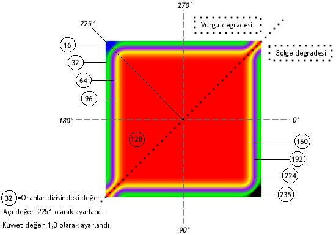

| Paket | flash.filters |
| Sınıf | public final class GradientBevelFilter |
| Miras Alma | GradientBevelFilter |
| Dil Sürümü: | ActionScript 3.0 |
| Çalışma Zamanı Sürümleri: | AIR 1.0, Flash Player 9 |
Filtrelerin kullanımı, filtreyi uyguladığınız nesneye bağlıdır.
- Filtreleri görüntüleme nesnelerine uygulamak için
filtersözelliğini kullanın. Nesneninfiltersözelliğini ayarladığınızda nesne değiştirilmez vefiltersözelliğini temizleyerek filtreyi kaldırabilirsiniz. - BitmapData nesnelerine filtre uygulamak için
BitmapData.applyFilter()yöntemini kullanın. Bir BitmapData nesnesi üzerindeapplyFilter()kullanıldığında kaynak BitmapData nesnesi ve filtre nesnesi alınır ve sonuç olarak ortaya filtrelenmiş bir görüntü çıkar.
Bir görüntüleme nesnesine filtre uygularsanız, görüntüleme nesnesinin cacheAsBitmap özelliği true olarak ayarlanır. Tüm filtreleri temizlerseniz, orijinal cacheAsBitmap değeri geri yüklenir.
Bu filtre Sahne Alanı ölçeklemesini destekler. Ancak, genel ölçeklemeyi, döndürmeyi ve eğimi desteklemez; nesnenin kendisi ölçeklenirse (scaleX ve scaleY 1,0 dışında bir değere ayarlanmışsa) filtre efekti ölçeklenmez. Yalnızca kullanıcı Sahne Alanı'na yakınlaştırma yaptığında ölçeklenir.
Elde edilen görüntü maksimum boyutları aşıyorsa, filtre uygulanmaz. AIR 1.5 ve Flash Player 10'da, maksimum boyut genişlik ve yükseklikte 8,191 pikseldir ve toplam piksel sayısı 16,777,215'yı geçemez. (Bu nedenle, bir görüntü 8,191 piksel genişliğindeyse en fazla 2,048 piksel yüksekliğinde olabilir.) Flash Player 9 ve önceki sürümleri ile AIR 1.1 ve önceki sürümlerinde, sınırlama yükseklikte 2.880 piksel ve genişlikte 2.880 pikseldir. Örneğin, bir filtre uygulanmışken büyük bir film klibine yakınlaştırma yaptığınızda, elde edilen görüntü maksimum boyutları aşarsa filtre kapatılır.
İlgili API Öğeleri
flash.display.BitmapData.applyFilter()
BevelFilter
flash.display.DisplayObject.filters
flash.display.DisplayObject.cacheAsBitmap
 Miras Alınan Genel Özellikleri Gizle
Miras Alınan Genel Özellikleri Gizle Miras Alınan Genel Özellikleri Göster
Miras Alınan Genel Özellikleri Göster| Özellik | Tanımlayan: | ||
|---|---|---|---|
| alphas : Array
Renk dizisindeki karşılık gelen renkler için bir alfa saydamlık değerleri dizisi. | GradientBevelFilter | ||
| angle : Number
Derece olarak açı. | GradientBevelFilter | ||
| blurX : Number
Yatay bulanıklaştırma miktarı. | GradientBevelFilter | ||
| blurY : Number
Dikey bulanıklaştırma miktarı. | GradientBevelFilter | ||
| colors : Array
Degradede kullanılacak RGB onaltılık renk değerleri dizisi. | GradientBevelFilter | ||
 | constructor : Object
Belirli bir nesne örneği için sınıf nesnesine veya yapıcı işlevine bir başvuru. | Object | |
| distance : Number
Uzaklık mesafesi. | GradientBevelFilter | ||
| knockout : Boolean
Nesnenin boşaltma efekti olup olmadığını belirtir. | GradientBevelFilter | ||
| quality : int
Filtrenin uygulanma sayısı. | GradientBevelFilter | ||
| ratios : Array
Renk dizisindeki karşılık gelen renkler için renk dağılım oranları. | GradientBevelFilter | ||
| strength : Number
Baskı ve dağılma kuvveti. | GradientBevelFilter | ||
| type : String
Eğim efektinin yerleşimi. | GradientBevelFilter | ||
| Yöntem | Tanımlayan: | ||
|---|---|---|---|
GradientBevelFilter(distance:Number = 4.0, angle:Number = 45, colors:Array = null, alphas:Array = null, ratios:Array = null, blurX:Number = 4.0, blurY:Number = 4.0, strength:Number = 1, quality:int = 1, type:String = "inner", knockout:Boolean = false)
Belirtilen parametrelere sahip filtreyi başlatır. | GradientBevelFilter | ||
[geçersiz kıl]
Bu filtre nesnesinin kopyasını döndürür. | GradientBevelFilter | ||
|
Bir nesnenin belirli bir özelliğinin tanımlı olup olmadığını gösterir. | Object | |
|
Object sınıfının bir örneğinin parametre olarak belirtilen nesnenin prototip zincirinde olup olmadığını gösterir. | Object | |
|
Belirtilen özelliğin bulunup bulunmadığını ve numaralandırılabilir olup olmadığını gösterir. | Object | |
|
Dinamik bir özelliğin döngü işlemlerinde kullanılabilirliğini ayarlar. | Object | |
|
Bu nesnenin, yerel ayara özel kurallara göre biçimlendirilmiş dize temsilini döndürür. | Object | |
|
Belirtilen nesnenin dize olarak temsil edilen halini döndürür. | Object | |
|
Belirtilen nesnenin temel değerini döndürür. | Object | |
alphas | özellik |
alphas:Array| Dil Sürümü: | ActionScript 3.0 |
| Çalışma Zamanı Sürümleri: | AIR 1.0, Flash Player 9 |
colors dizisindeki karşılık gelen renkler için alfa saydamlık değerleri dizisi. Dizideki her öğeye yönelik geçerli değerler 0 ila 1'dir. Örneğin ,25, %25'lik bir saydamlık değeri ayarlar.
alphas özelliği, değerleri doğrudan değiştirilerek değiştirilemez. Bunun yerine, alphas öğesine bir başvuru yapmalısınız, başvurularında değişiklik yapmalısınız ve alphas öğesini başvuruya ayarlamalısınız.
colors, alphas ve ratios özellikleri birbiriyle ilişkilidir. colors dizisindeki ilk öğe alphas dizisindeki ilk öğeye, ratios dizisindeki ilk öğeye ve diğer dizilerdeki ilk öğelere karşılık gelir.
Uygulama
public function get alphas():Array public function set alphas(value:Array):voidAtar
TypeError — Array öğesi ayarlanırken boş değere sahiptir
|
İlgili API Öğeleri
angle | özellik |
angle:Number| Dil Sürümü: | ActionScript 3.0 |
| Çalışma Zamanı Sürümleri: | AIR 1.0, Flash Player 9 |
Derece olarak açı. Geçerli değerler 0 ila 360'tır. Varsayılan değer 45'tir.
Açı değeri, nesnenin üstüne düşen teorik ışık kaynağının açısını temsil eder. Bu değer, degrade renklerinin nesneye uygulandığı açıyı belirler: vurgunun ve gölgenin göründüğü yer veya dizideki ilk rengin göründüğü yer. Ardından renkler, dizide göründükleri sırada uygulanır.
Uygulama
public function get angle():Number public function set angle(value:Number):voidİlgili API Öğeleri
blurX | özellik |
blurX:Number| Dil Sürümü: | ActionScript 3.0 |
| Çalışma Zamanı Sürümleri: | AIR 1.0, Flash Player 9 |
Yatay bulanıklaştırma miktarı. Geçerli değerler 0 ila 255'tir. 1 veya daha az bulanıklaştırma miktarı, orijinal dosyanın olduğu gibi kopyalandığı anlamına gelir. Varsayılan değer 4'tür. 2'nin katları olan değerler (2, 4, 8, 16 ve 32 gibi) diğer değerlerden daha hızlı oluşturmak için en iyileştirilir.
Uygulama
public function get blurX():Number public function set blurX(value:Number):voidblurY | özellik |
blurY:Number| Dil Sürümü: | ActionScript 3.0 |
| Çalışma Zamanı Sürümleri: | AIR 1.0, Flash Player 9 |
Dikey bulanıklaştırma miktarı. Geçerli değerler 0 ila 255'tir. 1 veya daha az bulanıklaştırma miktarı, orijinal dosyanın olduğu gibi kopyalandığı anlamına gelir. Varsayılan değer 4'tür. 2'nin katları olan değerler (2, 4, 8, 16 ve 32 gibi) diğer değerlerden daha hızlı oluşturmak için en iyileştirilir.
Uygulama
public function get blurY():Number public function set blurY(value:Number):voidcolors | özellik |
colors:Array| Dil Sürümü: | ActionScript 3.0 |
| Çalışma Zamanı Sürümleri: | AIR 1.0, Flash Player 9 |
Degradede kullanılacak RGB onaltılık renk değerleri dizisi. Örneğin kırmızı: 0xFF0000, mavi: 0x0000FF şeklinde devam eder.
colors özelliği, değerleri doğrudan değiştirilerek değiştirilemez. Bunun yerine, colors öğesine bir başvuru yapmalısınız, başvurularında değişiklik yapmalısınız ve colors öğesini başvuruya ayarlamalısınız.
colors, alphas ve ratios özellikleri birbiriyle ilişkilidir. colors dizisindeki ilk öğe alphas dizisindeki ilk öğeye, ratios dizisindeki ilk öğeye ve diğer dizilerdeki ilk öğelere karşılık gelir.
Uygulama
public function get colors():Array public function set colors(value:Array):voidAtar
TypeError — Array öğesi ayarlanırken boş değere sahiptir
|
İlgili API Öğeleri
distance | özellik |
knockout | özellik |
knockout:Boolean| Dil Sürümü: | ActionScript 3.0 |
| Çalışma Zamanı Sürümleri: | AIR 1.0, Flash Player 9 |
Nesnenin boşaltma efekti olup olmadığını belirtir. Boşaltma efekti nesnenin dolgusunu saydam yapar ve belgenin arka plan rengini ortaya çıkarır. true değeri bir boşaltma efektini belirtir; varsayılan false değeridir. (Boşaltma efekti yoktur.)
Uygulama
public function get knockout():Boolean public function set knockout(value:Boolean):voidquality | özellik |
quality:int| Dil Sürümü: | ActionScript 3.0 |
| Çalışma Zamanı Sürümleri: | AIR 1.0, Flash Player 9 |
Filtrenin kaç defa uygulanacağı. Varsayılan değer, filtrenin bir kez uygulanmasına karşılık gelen BitmapFilterQuality.LOW değeridir. BitmapFilterQuality.MEDIUM değeri filtreyi iki kez uygular; BitmapFilterQuality.HIGH filtreyi üç kez uygular. Daha düşük değerlere sahip filtreler daha hızlı oluşturulur.
Birçok uygulama için düşük, orta veya yüksek quality değeri yeterlidir. Farklı bir efekt elde etmek için fazladan 15'e kadar sayısal değer kullanabilseniz de, daha yüksek değerler daha yavaş oluşturulur. quality değerini artırmak yerine, hızlı oluşturmayla birlikte yalnızca blurX ve blurY özelliklerinin değerlerini artırarak benzer bir efekt elde edebilirsiniz.
Uygulama
public function get quality():int public function set quality(value:int):voidİlgili API Öğeleri
ratios | özellik |
ratios:Array| Dil Sürümü: | ActionScript 3.0 |
| Çalışma Zamanı Sürümleri: | AIR 1.0, Flash Player 9 |
colors dizisindeki karşılık gelen renkler için renk dağılım oranları. Dizideki her öğeye yönelik geçerli değerler 0 ila 255'tir.
ratios özelliği, değerleri doğrudan değiştirilerek değiştirilemez. Bunun yerine, ratios öğesine bir başvuru yapmalısınız, başvurularında değişiklik yapmalısınız ve ratios öğesini başvuruya ayarlamalısınız.
colors, alphas ve ratios özellikleri birbiriyle ilişkilidir. colors dizisindeki ilk öğe alphas dizisindeki ilk öğeye, ratios dizisindeki ilk öğeye ve diğer dizilerdeki ilk öğelere karşılık gelir.
Bir degrade eğimindeki renklerin nasıl dağıtıldığını anlamak için öncelikle degrade eğiminizde kullanmak istediğiniz renkleri seçin. Basit bir eğimde vurgu rengi ve gölge rengi olacağını, bir degrade eğrisinde de vurgu degradesi ve gölge degradesi olacağını unutmayın. Vurgunun sol üst köşede ve gölgenin de sağ alt köşede görüneceğini varsayın. Filtrenin olası bir kullanımının vurguda dört ve gölgede dört adet rengi olacağını varsayın. Filtre, vurgu ve gölgenin yanı sıra vurgunun ve gölgenin kenarlarının birleştiği noktada bir taban dolgusu kullanır. Böylece, toplam renk sayısı dokuz ve oranlar dizisindeki karşılık gelen öğe sayısı dokuz olur.
Bir degradenin, birbiriyle karışan farklı renklerde çizgilerden oluştuğunu düşünürseniz, her oran değeri, degradenin yarıçapı üzerindeki rengin konumunu ayarlar. Burada 0 degradenin en dış noktasını temsil ederken 255 de degradenin en iç noktasını temsil eder. Genel bir kullanımda orta değer 128'dir ve bu da taban doldurma değeridir. Aşağıdaki görüntüde gösterilen eğim efektini elde etmek için oran değerlerini, dokuz renk örneğini kullanarak aşağıdaki gibi ayarlayın.
- İlk dört renk 0-127 arasında değişir. Değerler, her değer bir öncekinden daha yüksek veya bir öncekiyle eşit olacak şekilde artış gösterir. Bu, vurgu eğimi kenarıdır.
- Beşinci renk (orta renk) taban dolgusudur ve 128'e ayarlanmıştır. 128'in piksel değeri, taban dolgusunu ayarlar. Bu, türün dış olarak ayarlanması durumunda şeklin dışında (ve eğim kenarlarının etrafında) görünür; türün iç olarak ayarlanması durumunda nesnenin kendi dolgusunu etkin biçimde kaplayarak şeklin içinde görünür.
- Son dört renk 129-255 arasında değişir. Değerler, her değer bir öncekinden daha yüksek veya bir öncekiyle eşit olacak şekilde artış gösterir. Bu, gölge eğimi kenarıdır.
Her kenar için eşit bir renk dağılımı istiyorsanız orta rengin taban dolgusu olduğu tek sayıda renk kullanın. 0-127 ve 129-255 değerlerini renkleriniz arasında eşit paylaştırın ve ardından değeri, degradedeki her renk çizgisinin genişliğini değiştirmek için ayarlayın. Dokuz renkli degrade eğimi için olası bir dizi [16, 32, 64, 96, 128, 160, 192, 224, 235] şeklindedir. Aşağıdaki görüntüler, degrade eğimini açıklandığı şekilde gösterir:

Degradedeki renklerin dağılmasının blurX, blurY, strength ve quality özelliklerin yanı sıra ratios değerlerine göre değişeceğini unutmayın.
Uygulama
public function get ratios():Array public function set ratios(value:Array):voidAtar
TypeError — Array öğesi ayarlanırken boş değere sahiptir
|
İlgili API Öğeleri
strength | özellik |
strength:Number| Dil Sürümü: | ActionScript 3.0 |
| Çalışma Zamanı Sürümleri: | AIR 1.0, Flash Player 9 |
Baskı ve dağılma kuvveti. Değer ne kadar yüksek olursa daha fazla renk baskısı yapılır ve eğim ve arka plan arasındaki kontrast o kadar güçlü olur. Geçerli değerler 0 ila 255'tir. 0 değeri, filtrenin uygulanmadığı anlamına gelir. Varsayılan değer 1'dir.
Uygulama
public function get strength():Number public function set strength(value:Number):voidİlgili API Öğeleri
type | özellik |
type:String| Dil Sürümü: | ActionScript 3.0 |
| Çalışma Zamanı Sürümleri: | AIR 1.0, Flash Player 9 |
Eğim efektinin yerleşimi. Olası değerler BitmapFilterType sabitleridir:
BitmapFilterType.OUTER— Nesnenin dış kenarı üzerinde eğimBitmapFilterType.INNER— Nesnenin iç kenarı üzerinde eğimBitmapFilterType.FULL— Nesnenin üst kısmı üzerinde eğim
Uygulama
public function get type():String public function set type(value:String):voidGradientBevelFilter | () | Yapıcı |
public function GradientBevelFilter(distance:Number = 4.0, angle:Number = 45, colors:Array = null, alphas:Array = null, ratios:Array = null, blurX:Number = 4.0, blurY:Number = 4.0, strength:Number = 1, quality:int = 1, type:String = "inner", knockout:Boolean = false)| Dil Sürümü: | ActionScript 3.0 |
| Çalışma Zamanı Sürümleri: | AIR 1.0, Flash Player 9 |
Belirtilen parametrelere sahip filtreyi başlatır.
Parametrelerdistance:Number (default = 4.0) | |
angle:Number (default = 45) | |
colors:Array (default = null) | |
alphas:Array (default = null)colors dizisindeki karşılık gelen renkler için alfa saydamlık değerleri dizisi. Dizideki her öğeye yönelik geçerli değerler 0 ila 1'dir. Örneğin ,25, %25'lik bir saydamlık değeri ayarlar.
| |
ratios:Array (default = null) | |
blurX:Number (default = 4.0) | |
blurY:Number (default = 4.0) | |
strength:Number (default = 1) | |
quality:int (default = 1)
Daha fazla bilgi için | |
type:String (default = "inner")
| |
knockout:Boolean (default = false)true değeri nesnenin dolgusunu saydam yapar ve belgenin arka plan rengini ortaya çıkarır.
|
İlgili API Öğeleri
clone | () | yöntem |
override public function clone():BitmapFilter| Dil Sürümü: | ActionScript 3.0 |
| Çalışma Zamanı Sürümleri: | AIR 1.0, Flash Player 9 |
Bu filtre nesnesinin kopyasını döndürür.
DöndürürBitmapFilter — Orijinal GradientBevelFilter örneğiyle tamamen aynı özelliklere sahip yeni bir GradientBevelFilter örneği.
|
- Gerekli sınıfları içe aktarın.
- Kareyi ve filtreyi tanımlamak için global değişkenler bildirin.
- Yapıcı işlevlerini oluşturun. Bu işlevler aşağıdakileri gerçekleştirir:
- Gri bir kare çizmek için Sprite öğesinin
graphicsözelliği üzerinden erişilen Graphics sınıfının yöntemlerini kullanandraw()yöntemini çağırır. filteradlı bir BitmapFilter nesnesi oluşturur ve bunu ogetBitmapFilter()öğesine yapılan çağrının dönüş değerine atar ve böylece filtre oluşturulur.myFiltersadlı yeni bir dizi oluşturur vefilteröğesini bu diziye ekler.myFiltersöğesini GradientBevelFilterExample nesnesininfiltersözelliğine atar. Böylece,myFiltersöğesinde bulunan tüm filtreler uygulanır. Bu durumda bu yalnızcafilteröğesidir.
- Gri bir kare çizmek için Sprite öğesinin
package {
import flash.display.Sprite;
import flash.filters.BitmapFilter;
import flash.filters.BitmapFilterQuality;
import flash.filters.BitmapFilterType;
import flash.filters.GradientBevelFilter;
public class GradientBevelFilterExample extends Sprite {
private var bgColor:uint = 0xCCCCCC;
private var size:uint = 80;
private var offset:uint = 50;
private var distance:Number = 5;
private var angleInDegrees:Number = 225; // opposite 45 degrees
private var colors:Array = [0xFFFFFF, 0xCCCCCC, 0x000000];
private var alphas:Array = [1, 0, 1];
private var ratios:Array = [0, 128, 255];
private var blurX:Number = 8;
private var blurY:Number = 8;
private var strength:Number = 2;
private var quality:Number = BitmapFilterQuality.HIGH
private var type:String = BitmapFilterType.INNER;
private var knockout:Boolean = true;
public function GradientBevelFilterExample() {
draw();
var filter:BitmapFilter = getBitmapFilter();
var myFilters:Array = new Array();
myFilters.push(filter);
filters = myFilters;
}
private function getBitmapFilter():BitmapFilter {
return new GradientBevelFilter(distance,
angleInDegrees,
colors,
alphas,
ratios,
blurX,
blurY,
strength,
quality,
type,
knockout);
}
private function draw():void {
graphics.beginFill(bgColor);
graphics.drawRect(offset, offset, size, size);
graphics.endFill();
}
}
}
Tue Jun 12 2018, 01:09 PM Z